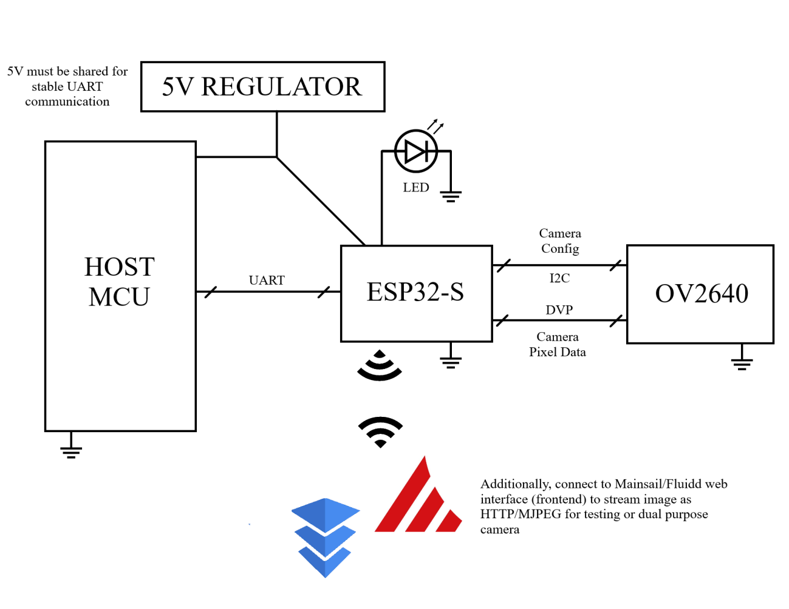
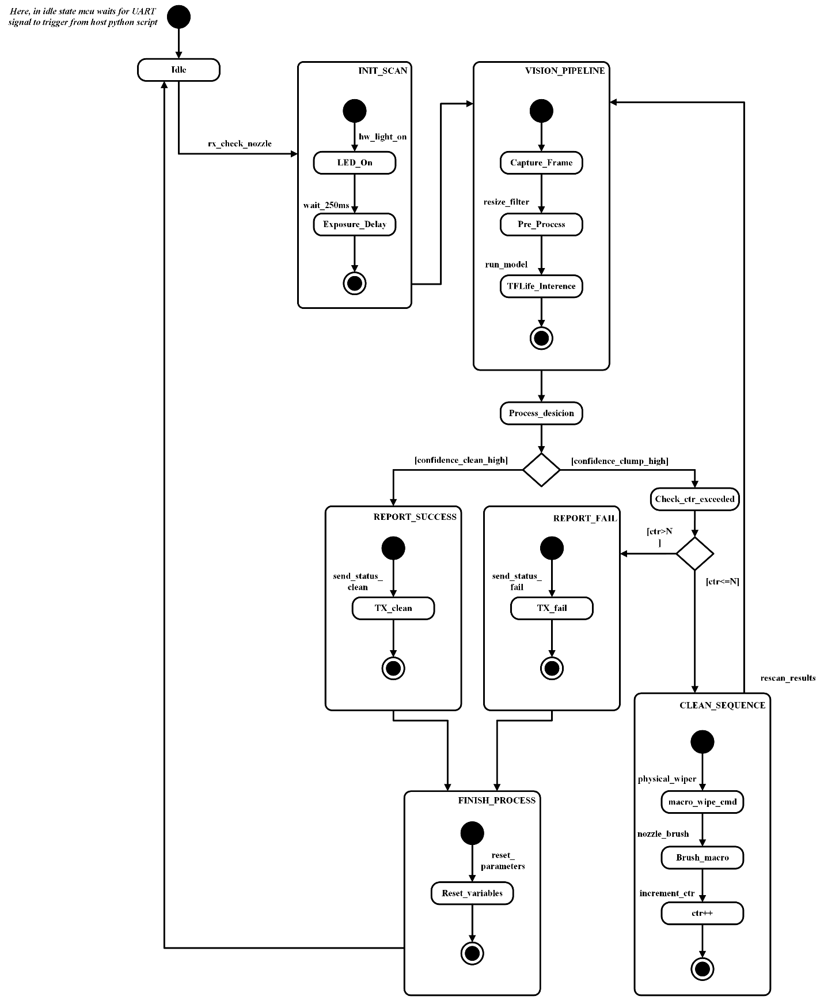
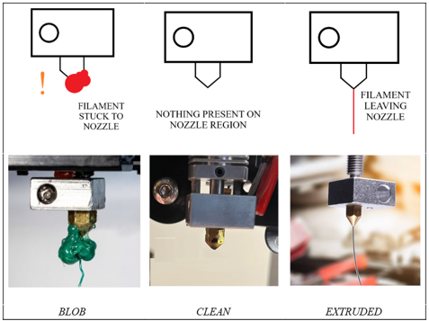
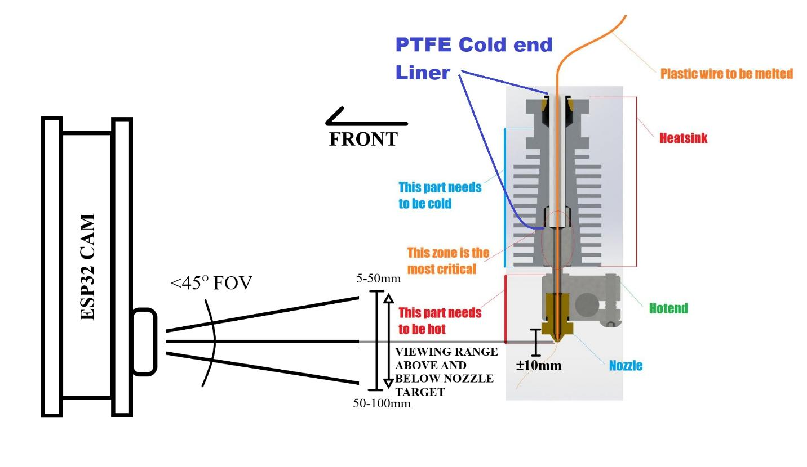
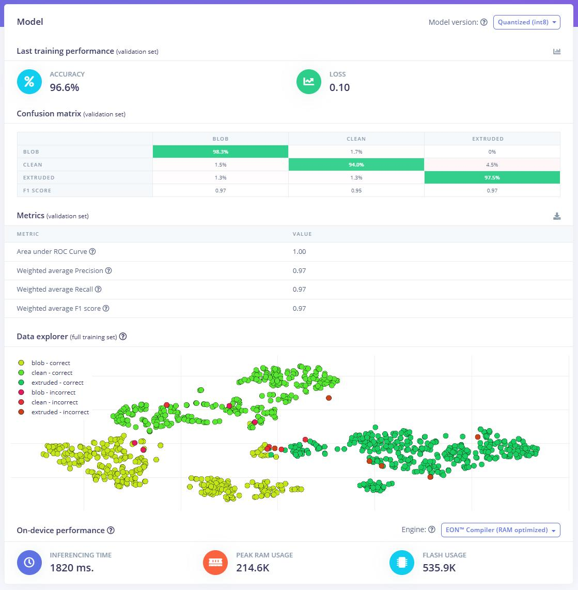
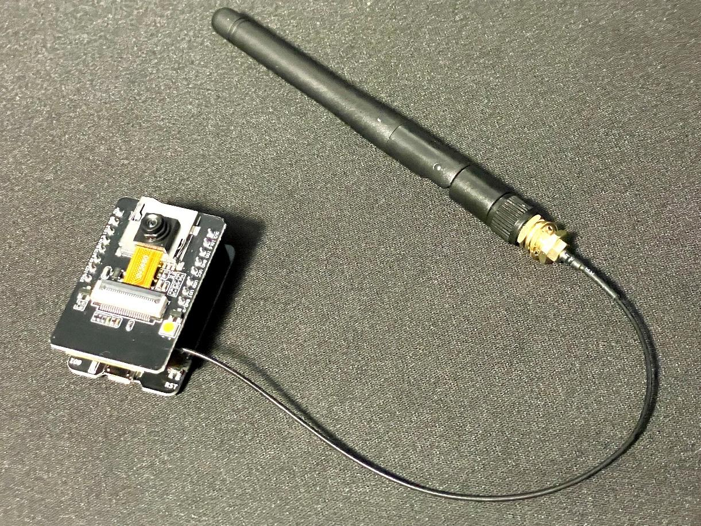

GEN 02
INTRASTICE.
Maximum volume. Zero waste.

Maximum volume. Zero waste.
220mm³ capacity. Engineered into a footprint barely larger than the print bed itself.

Fig 1. Top View Concept Render

Fig 2. Close Up Concept Render
Edge ML processing. Real-time anomaly detection. Total autonomy.




Built on the ESP32-CAM. Fully local inference.

ESP32 Architecture
